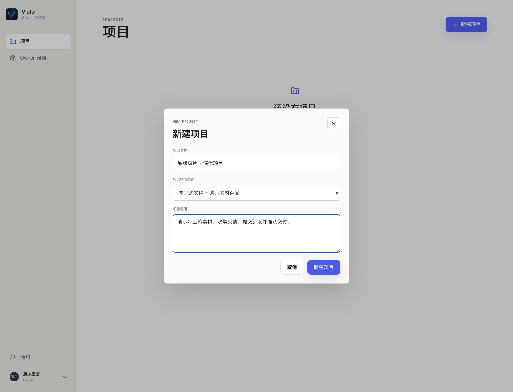

文档中心/项目与素材
VISTO USER GUIDE / 12
创建与管理项目
用户手册2026-10-03Server 浏览器工作台
项目是协作范围。把不同客户、交付批次或权限边界放进不同项目，可以减少误共享和误操作。


创建项目
- 回到项目列表，点“新建项目”。
- 填写名称；建议“作品 / 客户 + 批次”，避免多个“新项目”。
- 选择已开放的“项目存储位置”。没有位置可选时让 Owner 配置，不去寻找扫描导入入口。
- 在说明里写目标、交付内容、负责人员和时间。
- 提交并确认进入正确项目。
示例说明：“60 秒品牌短片；主片横版 16:9，社交裁切另立资产；导演先看节奏，客户确认文案；交付日前完成最终审阅。”
项目主管的日常维护
在项目设置维护基本资料和成员；存储只选择 Owner 已授权的范围。更换上传位置主要决定后续落点，不应默认理解为已有媒体已迁移。需要转移主管职责时使用项目提供的转移流程，检查新的主管和自己的保留角色，再确认。
成员看不到项目时
先检查是否登录正确工作空间和账号，再检查项目成员关系、账号状态和期限。用户已经注册或已经在团队里，不代表已被加入该项目。失去成员资格、项目删除或权限不足都可能使项目不可见。
完成检查： 名称和说明正确、上传存储可用、成员在各自账号中可见应参与的项目。